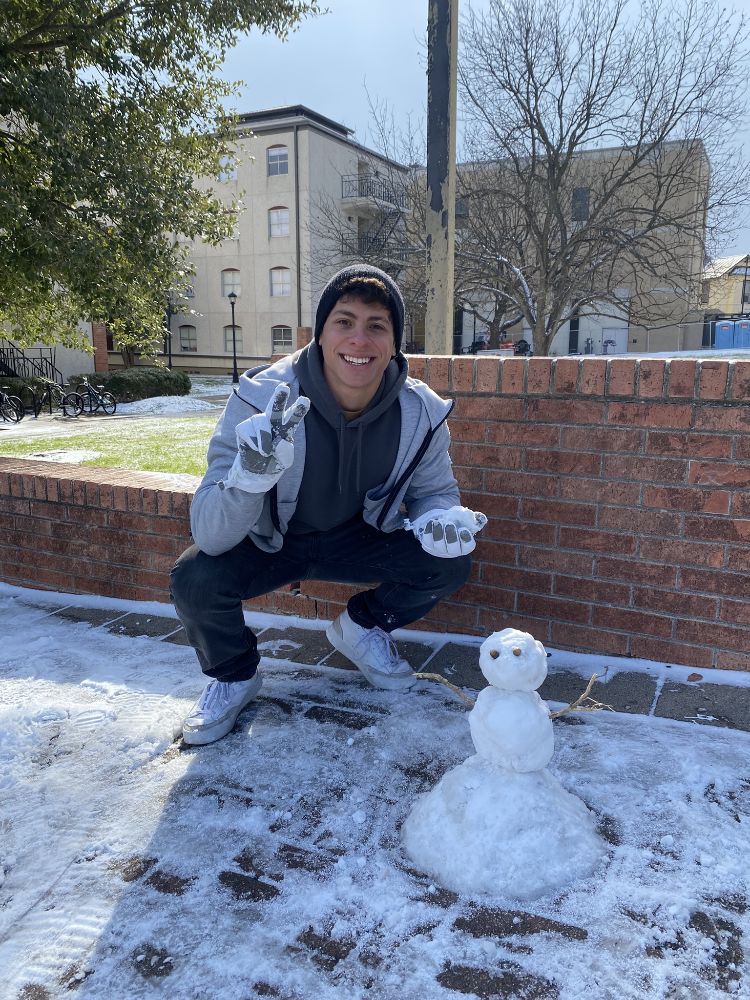

Software Developer | C++ | Python | AI | Web Dev & Desing
Software Developer based in San Marcos, Texas. Passionate about messing with my PC, videogames consoles, RC toys or anything that has a circuit board since I have memory. These days I focus more on building meaningful projects on C++, Python, and AI technologies, trying to apply the things I like the most using the freedom and creativity that programming offers me. Currently pursuing a degree in Computer Science at Texas State University, where I am honing my skills in software engineering and data analysis.
Inspired by my love for the sport and the movie "Moneyball" I built a machine learning model to predict MLB player performance for the 2024 season, using data from 2015 to 2025 pulled from baseball-reference.com. The project was coded in Python and made heavy use of pandas for data handling, NumPy for number crunching, and scikit-learn to train and evaluate the model. To make it more interactive, I created a Flask web app where users can type in a player’s name and instantly see the model's prediction based on the input. It turned into a fun and practical way to show off what the model can do. I had the chance to present the project at the TXST AI Symposium 2025, where it was one of the few student projects featured. Got some great feedback from professors and people in the industry, and it was cool to see how much interest there was in using AI for sports.
View DemoA Python tool that reads a study guide and turns it into an interactive quiz to help students prepare better.
A C++-based analytical model adapting the baseball WAR stat to evaluate player value in La Liga.
Email: samuel.engineer@example.com
GitHub: github.com/samueldev
LinkedIn: linkedin.com/in/samueldev